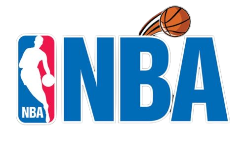

NBA (National Basketball Association)
|  |
|
A NBA (National Basketball Association) é a principal liga de basquete profissional dos Estados Unidos e uma das mais proeminentes do mundo. Fundada em 1946, a NBA é composta por 30 equipes, divididas entre as conferências Leste e Oeste, competindo em uma temporada regular e playoffs emocionantes. A liga é conhecida por abrigar alguns dos maiores talentos do basquete, incluindo lendas como Michael Jordan, LeBron James e Kobe Bryant. A temporada regular da NBA geralmente ocorre de outubro a abril, seguida pelos playoffs, onde as equipes competem pelo campeonato da NBA, conhecido como o Troféu Larry O'Brien. Além de seu destaque no basquete, a NBA também é reconhecida por seu impacto cultural e global. A liga atrai fãs de todo o mundo e se destaca por suas iniciativas sociais e filantrópicas. A NBA é uma das principais impulsionadoras do esporte profissional e continua a expandir seu alcance, tornando-se uma influência significativa na cultura pop e na promoção de causas sociais. |